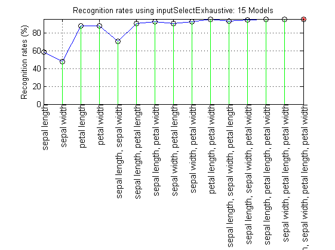
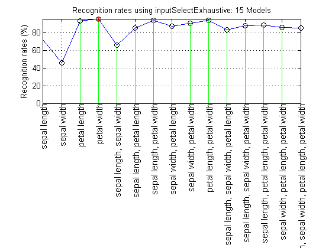

inputSelectExhaustive
Input selection via exhaustive search
Contents
Syntax
- bestSelectedInput=inputSelectExhaustive(DS)
- bestSelectedInput=inputSelectExhaustive(DS, inputNum)
- bestSelectedInput=inputSelectExhaustive(DS, inputNum, classifier, param)
- bestSelectedInput=inputSelectExhaustive(DS, inputNum, classifier, param, plotOpt)
- [bestSelectedInput, bestRecogRate, allSelectedInput, allRecogRate, elapsedTime]=inputSelectExhaustive(...)
Description
[bestSelectedInput, allSelectedInput, allRecogRate, elapsedTime]=inputSelectExhaustive(DS, inputNum, classifier, param, plotOpt) performs input selection via exhaustive search.
- Input:
- DS: dataset
- inputNum: up to inputNum inputs are selected
- classifier: classifier for input selection
- param: parameters for classifier
- plotOpt: 0 for not plotting (default: 1)
- Output:
- bestSelectedInput: overall selected input index
- bestRecogRate: recognition rate based on the final selected input
- allSelectedInput: all selected input during the process
- allRecogRate: all recognition rate
- elapseTime: elapsed time
Example
KNNC classifier
DS=prData('iris');
figure; inputSelectExhaustive(DS);
Construct 15 KNN models, each with up to 4 inputs selected from 4 candidates...
modelIndex 1/15: selected={sepal length} => Recog. rate = 58.666667%
modelIndex 2/15: selected={sepal width} => Recog. rate = 48.000000%
modelIndex 3/15: selected={petal length} => Recog. rate = 88.000000%
modelIndex 4/15: selected={petal width} => Recog. rate = 88.000000%
modelIndex 5/15: selected={sepal length, sepal width} => Recog. rate = 70.666667%
modelIndex 6/15: selected={sepal length, petal length} => Recog. rate = 90.666667%
modelIndex 7/15: selected={sepal length, petal width} => Recog. rate = 92.666667%
modelIndex 8/15: selected={sepal width, petal length} => Recog. rate = 90.666667%
modelIndex 9/15: selected={sepal width, petal width} => Recog. rate = 92.666667%
modelIndex 10/15: selected={petal length, petal width} => Recog. rate = 95.333333%
modelIndex 11/15: selected={sepal length, sepal width, petal length} => Recog. rate = 93.333333%
modelIndex 12/15: selected={sepal length, sepal width, petal width} => Recog. rate = 94.666667%
modelIndex 13/15: selected={sepal length, petal length, petal width} => Recog. rate = 95.333333%
modelIndex 14/15: selected={sepal width, petal length, petal width} => Recog. rate = 95.333333%
modelIndex 15/15: selected={sepal length, sepal width, petal length, petal width} => Recog. rate = 96.000000%
Overall max recognition rate = 96.0%.
Selected 4 inputs (out of 4): sepal length, sepal width, petal length, petal width
 SVMC classifier
DS=prData('iris'); figure; inputSelectExhaustive(DS, inf, 'svmc');
Construct 15 KNN models, each with up to 4 inputs selected from 4 candidates...
modelIndex 1/15: selected={sepal length} => Recog. rate = 71.333333%
modelIndex 2/15: selected={sepal width} => Recog. rate = 46.000000%
modelIndex 3/15: selected={petal length} => Recog. rate = 93.333333%
modelIndex 4/15: selected={petal width} => Recog. rate = 95.333333%
modelIndex 5/15: selected={sepal length, sepal width} => Recog. rate = 66.000000%
modelIndex 6/15: selected={sepal length, petal length} => Recog. rate = 85.333333%
modelIndex 7/15: selected={sepal length, petal width} => Recog. rate = 94.000000%
modelIndex 8/15: selected={sepal width, petal length} => Recog. rate = 87.333333%
modelIndex 9/15: selected={sepal width, petal width} => Recog. rate = 90.666667%
modelIndex 10/15: selected={petal length, petal width} => Recog. rate = 94.000000%
modelIndex 11/15: selected={sepal length, sepal width, petal length} => Recog. rate = 83.333333%
modelIndex 12/15: selected={sepal length, sepal width, petal width} => Recog. rate = 88.000000%
modelIndex 13/15: selected={sepal length, petal length, petal width} => Recog. rate = 88.666667%
modelIndex 14/15: selected={sepal width, petal length, petal width} => Recog. rate = 86.000000%
modelIndex 15/15: selected={sepal length, sepal width, petal length, petal width} => Recog. rate = 85.333333%
Overall max recognition rate = 95.3%.
Selected 1 inputs (out of 4): petal width
